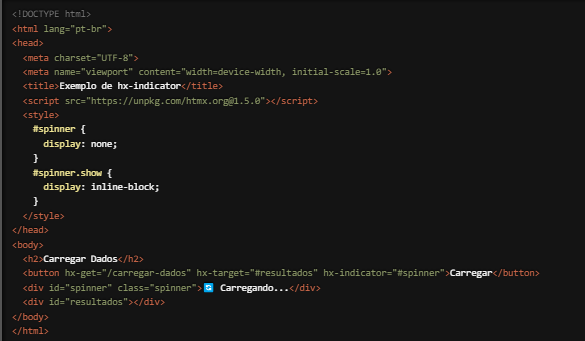

Estamos animados para compartilhar com você uma funcionalidade essencial do HTMX que melhora a experiência do usuário em suas aplicações web: o atributo `hx-indicator`. Com `hx- indicator`, você pode facilmente exibir indicadores de carregamento enquanto uma requisição HTTP está em andamento, informando aos usuários que uma ação está sendo processada. Vamos explorar como essa funcionalidade pode tornar suas interações mais transparentes e agradáveis.
O que é o atributo `hx-indicator`?
O `hx-indicator` é um atributo do HTMX que permite especificar um elemento HTML que será
exibido como um indicador de carregamento durante a execução de uma requisição HTTP. Este
indicador pode ser qualquer elemento HTML, como um spinner, uma barra de progresso ou uma
mensagem de "Carregando...". O `hx-indicator` melhora a experiência do usuário ao fornecer
feedback visual de que uma ação está sendo processada.
Como Funciona?
Vamos ver um exemplo prático para entender melhor como o `hx-indicator` pode ser usado.
Suponha que você tenha um botão que faz uma requisição para carregar dados e deseja exibir um
spinner de carregamento enquanto a requisição está em andamento:

Neste exemplo, quando o botão "Carregar" é clicado, uma requisição HTTP GET é enviada para a URL "/carregar-dados". O elemento com id `spinner` é especificado como o indicador de carregamento através do atributo `hx-indicator="#spinner"`. Enquanto a requisição está em andamento, o spinner é exibido, e quando a requisição é concluída, o spinner é ocultado automaticamente.